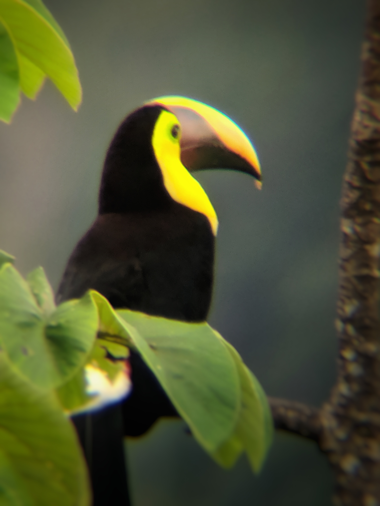

About Birding
What is birding?
You may have heard of the term: birdwatching. Birding is similar to birdwatching, though the terms differ slightly. Birding is the act of going out into nature to observe birds, whereas birdwatching is simply the act of watching birds. Still confused? Birdwatching is a passive activity, one you can do through your kitchen window. Birding is birdwatching’s rugged older brother: the one who gets up before dawn to hike to a good location with a pair of binoculars and a field guide. Birding is an active activity, and some birders can be quite competitive, attempting to see more birds in a day, or a season than others.
Birding season
The birding season is short in Canada. Birding can technically be done all year, as there are always birds around, but Canadian birders gear up for migration season, starting in the spring. Migration is a big deal in Canada, because many birds return for the summer, and many more can be glimpsed for a short few-week window as they move through southern Canada to the north. This is the start of what many also refer to as “warbler season” because songbirds are returning to Canada. In the spring, birds are breeding so they are in their most colourful plumages, and are singing constantly to try and find a mate. This breeding season is the best time to bird, because birds are more easily identified by both sight and song. There are many different apps that birders can use to help them identify birds. My personal favourites are Audubon and eBird.
Range Maps
A range map is a useful tool with regards to bird id. Range maps show the locations that a species of bird is likely to be, depending on the time of year. Above is an example of a range map for the common redpoll. Red shows where the bird is likely to be during the breading season, purple is year-round, and blue is winter.
What is a lifer?
A lifer is a term that birders use to refer to the first time they see a species of bird in their lives. Many birders keep a life list - a checklist of birds that they have seen. This yellow-throated toucan was a lifer for me on a trip to Costa Rica in 2019!